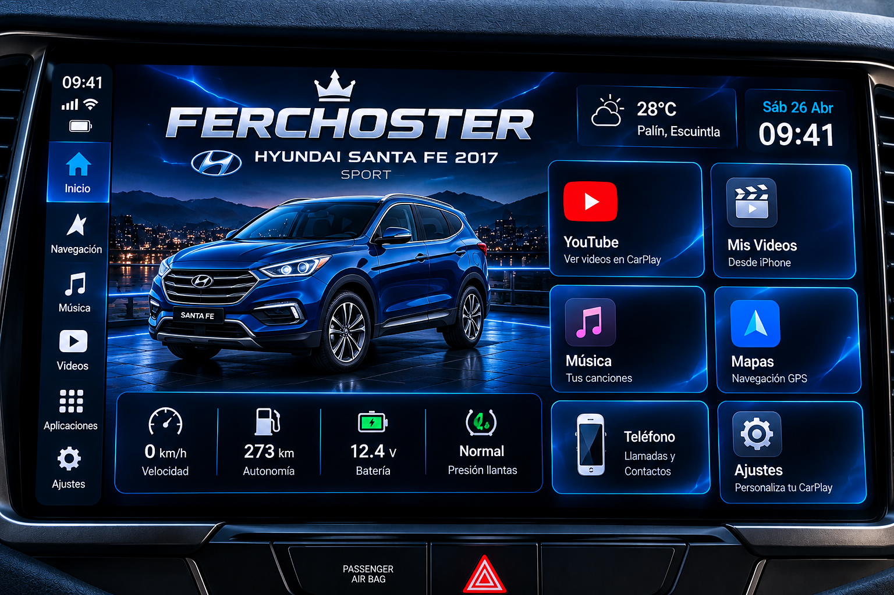

FERCHOSTER.
Tu centro multimedia, personalizado.

Tu espacio
YouTube.
Abre YouTube o pega el enlace de un video compatible.
Videos de YouTube
La reproducción integrada depende de la compatibilidad del navegador y de las reglas de YouTube. Si no se puede reproducir aquí, podrás abrir el video en YouTube.
Mis videos.
Selecciona un archivo de video compatible desde el dispositivo que estés usando.
Nota: por seguridad, el navegador solo puede acceder a los archivos que selecciones manualmente. La disponibilidad en CarBridge debe comprobarse en el iPhone.
Música.
Selecciona canciones guardadas en tu dispositivo.
La lista solo permanece disponible mientras los archivos seleccionados sigan accesibles en esta sesión.
Mapas.
Abre un servicio de mapas para iniciar tu ruta.
Aplicaciones.
Accesos rápidos para tu sistema multimedia.
Ajustes.
Personaliza la pantalla principal de FERCHOSTER CAR.